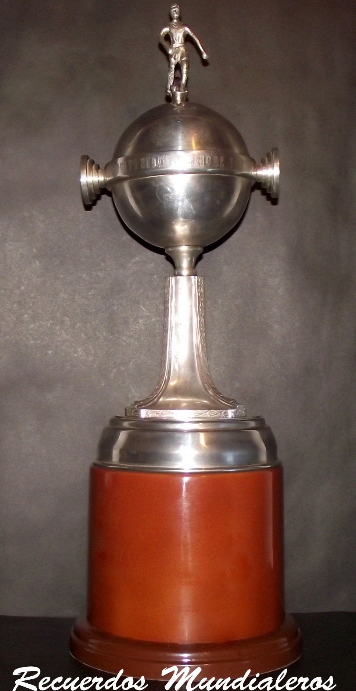

Historia
La Copa Libertadores de América, llamada oficialmente Copa Conmebol Libertadores y conocida
simplemente como Copa Libertadores, es un torneo anual internacional oficial de fútbol organizado
por la Conmebol, creado en 1960 bajo la denominación de Copa de Campeones de América.
En 1965 el torneo adoptó el nombre
Libertadores en honor a los líderes de las guerras de independencia hispanoamericanas y brasileña
de América del Sur.
Es uno de los más prestigiosos torneos en el mundo y la más prestigiosa
competición a nivel de clubes de fútbol en Sudamérica.
El torneo ha tenido diferentes formatos desde su creación. Al inicio, solo los campeones de las
ligas de América del Sur participaban. En 1966, comenzaron a participar los subcampeones de las ligas
de América del Sur.
En 1998, los equipos de México fueron invitados a competir, y han concursado de
forma regular desde el 2000 hasta el 2017, cuando se retiró del torneo por no lograr ajustarse al nuevo
calendario.
En el año 2000 el torneo expandió sus cupos de 20 a 32 para los equipos clasificados en las
ligas nacionales.
El club con más títulos es Independiente, de Argentina, con siete conquistas.
El actual campeón es el equipo
brasileño Grêmio, que logró su tercer título en la competición tras vencer en la final al Lanús de Argentina.
Primera Copa

Primera copa.Ganada por Peñarol de Uruguay en 1960